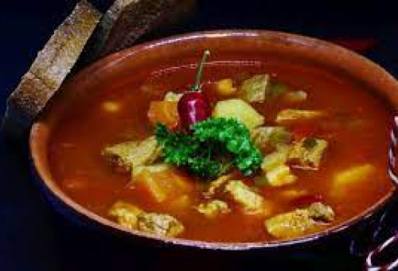
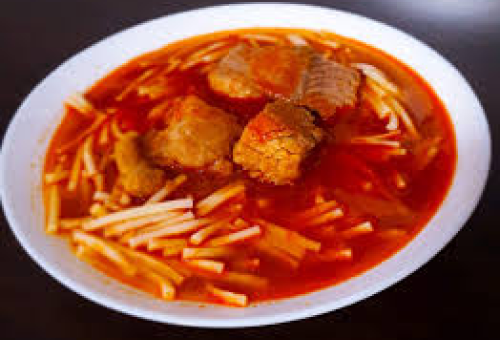
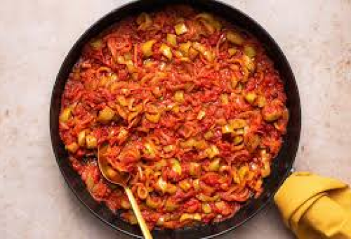
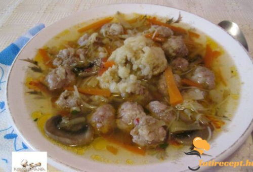
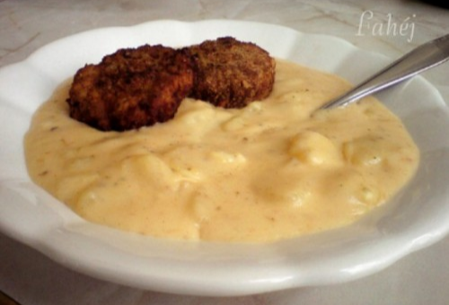

Gulyásleves
Az általában bográcsban készülő étel nagyon tápláló és ízletes, tele zöldségekkel
Elkészítési idő: 160 perc
Halászlé
A magyarok legnevezetesebb étele. Bográcsban készül, ünnepekkor. Az étel a legegészségesebbek egyike. Legfőbb összetevői a hús és tészta.
Elkészítési idő: 140 perc
Lecsó
E finom népszerű étel, a 19. század közepe óta készül Magyarországon.
Sok zöldséget, és kevés hústfélét tartalmaz. Laktató főétel.
Elkészítési idő: 50 perc
Húsleves
Jó télen és nyáron, elkészíthető különféle húsokból, és tartalmaz zöldségféléket is, mint pédául répa, hagyma, karalábé, stb..
Elkészítési idő: 120-180 perc
Krumplifőzelék
Tápláló főétel. Legfőbb összetevője a krumpli, ami mellé szinte mindig van kiegészítő, mint például fasírtok.
Elkészítési idő: 40 perc